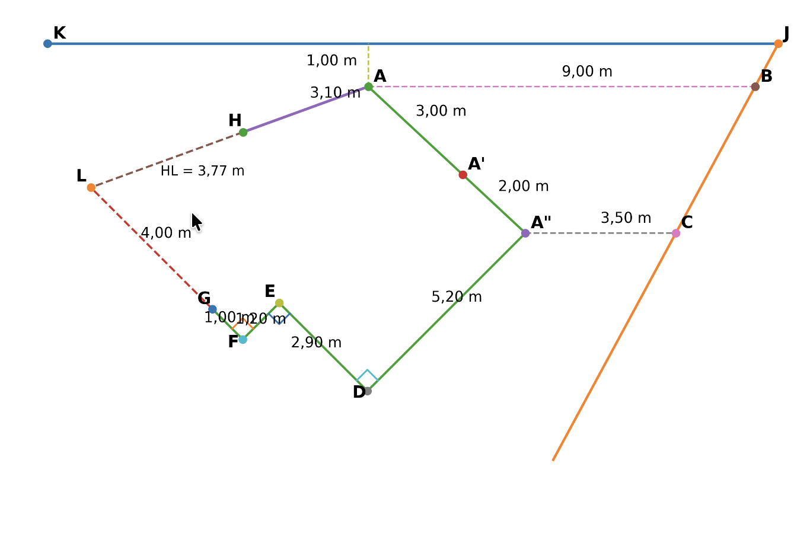
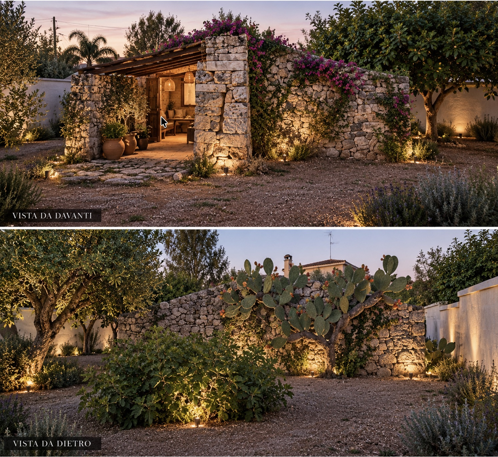
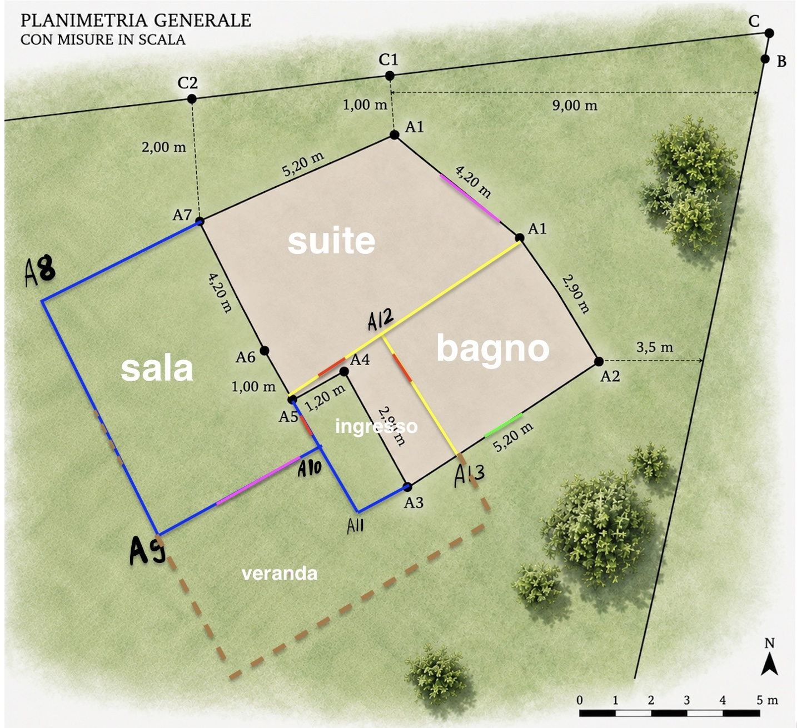
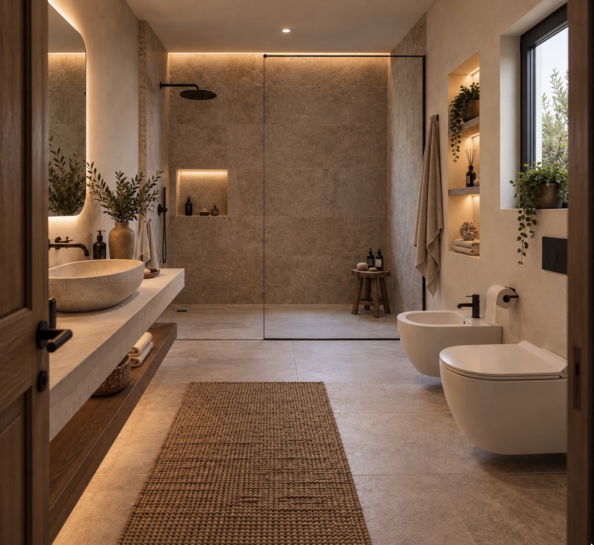
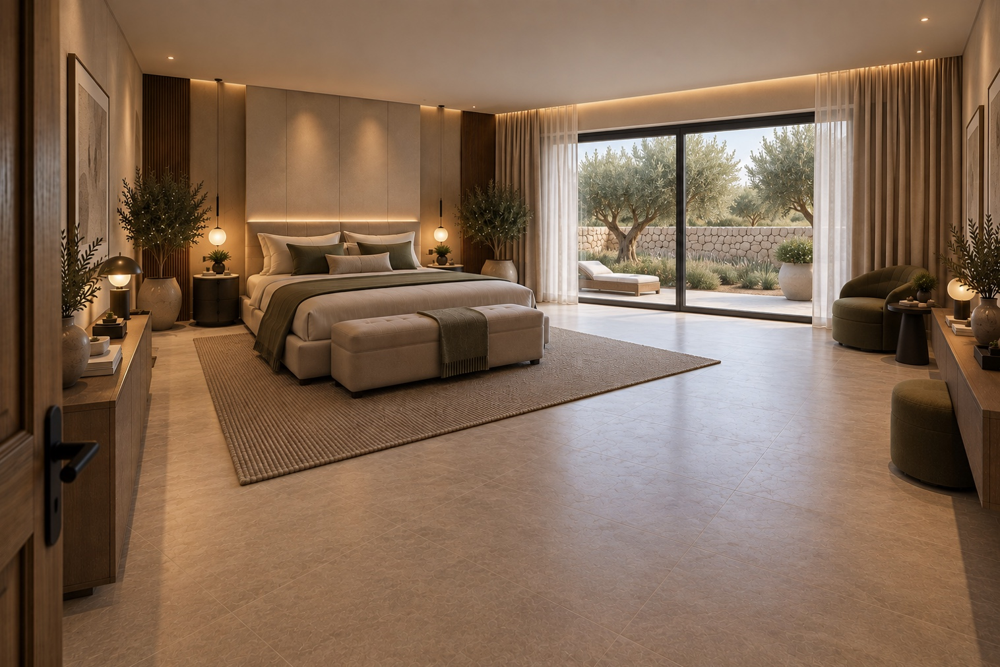
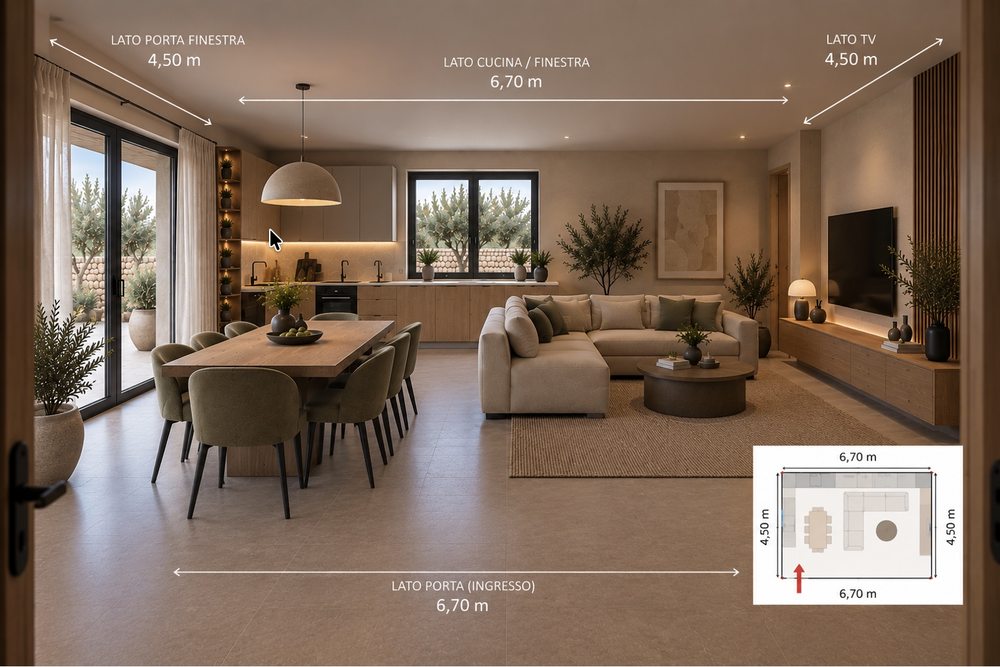
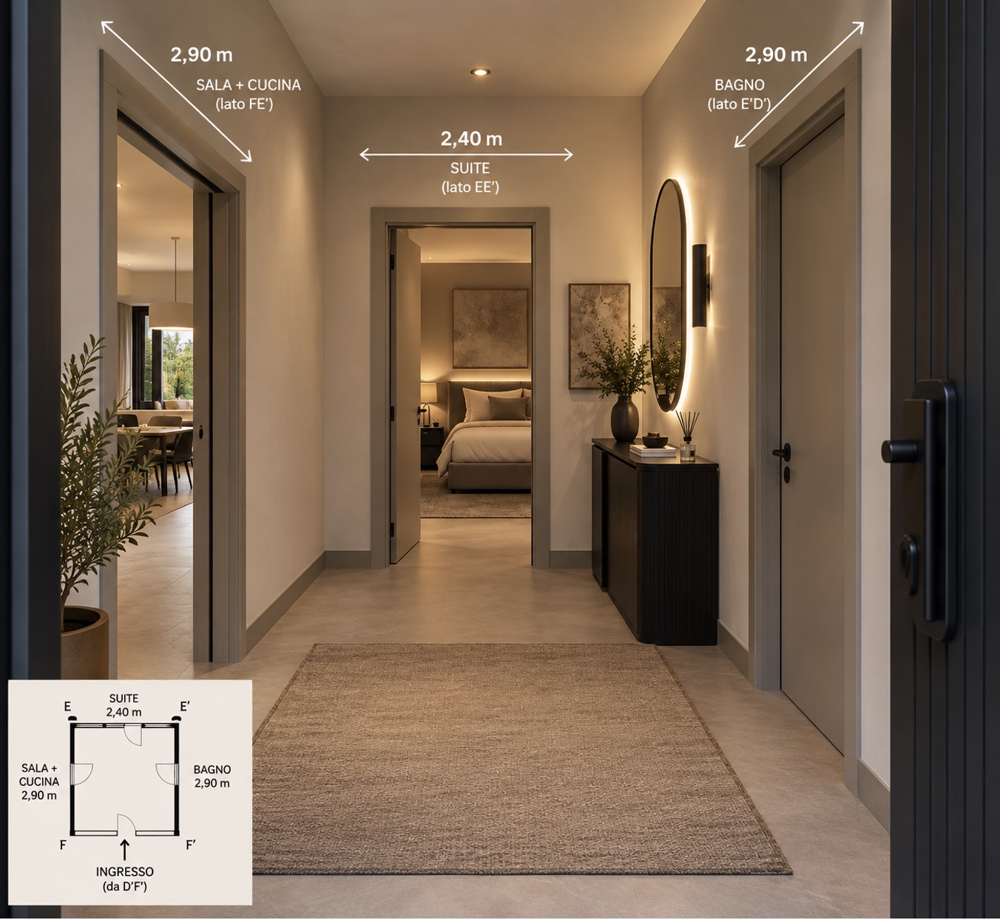
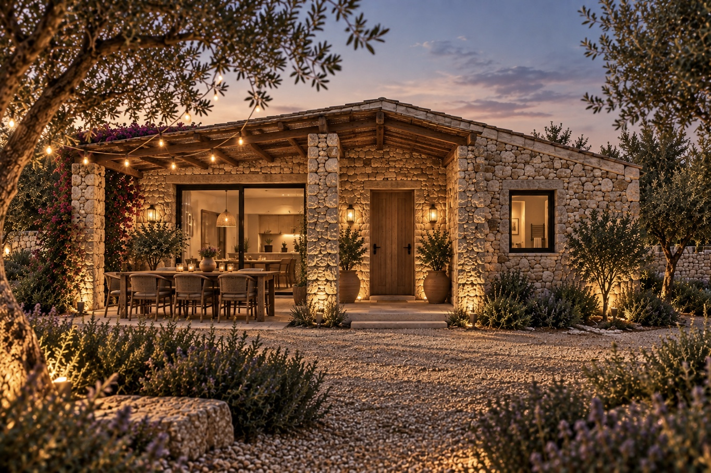
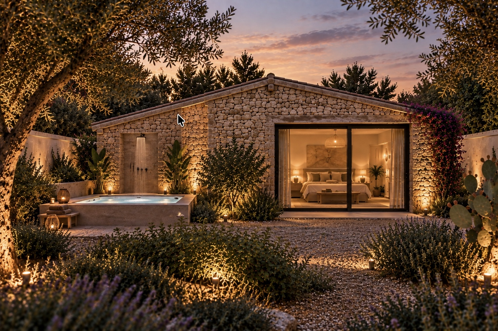

01
Progetto Carcareddhra
Schema geometrico di lavoro costruito a partire dalle misure e dai riferimenti fotografici disponibili.

Studio progettuale della dependance: sviluppo geometrico e planimetrico, definizione degli ambienti e render degli spazi interni ed esterni.
Schema geometrico di lavoro costruito a partire dalle misure e dai riferimenti fotografici disponibili.


Schema planimetrico con la suddivisione e definizione degli spazi.

Bagno 2,50 × 4,00 m.

Suite con porta finestra 6,20 × 4,00 m.

Sala + cucina 6,70 × 4,50 m.

Ingresso 2,40 × 2,90 m.

Pergola davanti alla porta finestra della sala con tavolo esterno, illuminazione sospesa, porta di ingresso e finestra del bagno.

Bagno a sinistra senza finestra su quel lato, doccia esterna su quel muro con jacuzzi adiacente; suite a destra con porta finestra.
